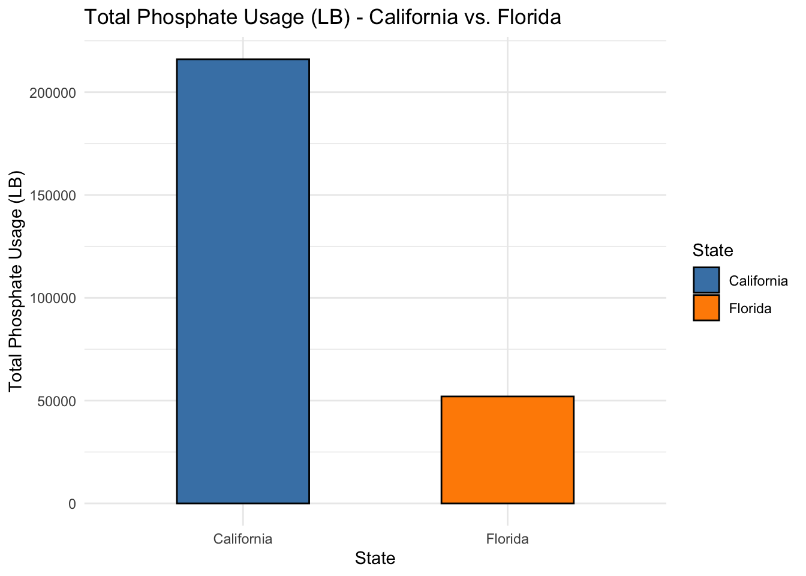
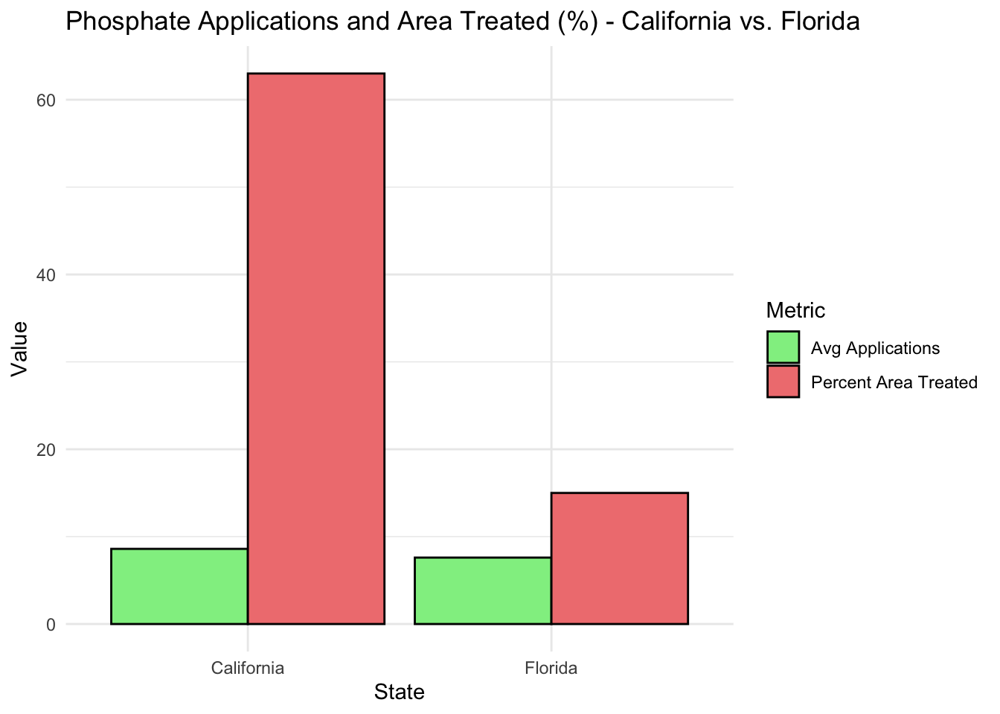

library(knitr)
library(kableExtra)
library(tidyverse)
library(stringr)
library(tinytex)Strawberry EDA
#URL=https://quickstats.nass.usda.gov/results/806E4FDF-C7DF-3DCC-8381-B220597B08EC
Preparing data for analysis
Introduction: foundations
Before we begin to work with the strawberry data, let’s talk about how we will approach the work.
Data cleaning and organization
Cleaning and organizing data for analysis is an essential skill for data scientists. Serious data analyses must be presented with the data on which the results depend. The credibility of data analysis and modelling depends on the care taken in data preparation and organization.
References
In their handbook “An introduction to data cleaning with R” by Edwin de Jonge and Mark van der Loo, de Jonge and van der Loo go into detail about specific data cleaning isssues and how to handle them in R.
“Problems, Methods, and Challenges in Comprehensive Data Cleansing” by Heiko Müller and Johann-Christoph Freytag is a good companion to the de Jonge and van der Loo handbook, offering additional issues in their discussion.
Attitudes
Mechanistic descriptions of data cleaning methods are insufficient.
Data is the product (or by-product) of purposeful human activity
Much of the data used in analysis accessed on local databases or online which may create the impression that the data have been carefully curated. Beware. Data are produced by people for a purpose, with a point-of-view, and at a time and location that may affect the data. The provenance and lineage of the data are meta data you should include when reporting analysis. Data collection is purposeful human activity with all of the risks and weaknesses that are part of any purposeful human activity.
Data is language
Data has meaning. Data can be included in sentences related to the meaning of the data. Cleaning and organizing data should be informed by the meaning the data convey and how that meaning relates to the research you are doing do achieve this important result.
Immerse yourself in the data. Put data into context.
Visualize the data to find problems, confirm your understandings, and plan your data organization. People do a bad job of seeing meaningful patterns in data but a good job of seeing patterns of all kinds when data are rendered as plots. As you product and show visualizations, ask your self and those who view your presentations, “what do you see?” and “what do you wonder?”
Example: Strawberries
Public information
WHO says strawberries may not be so safe for you–2017March16
Pesticides + poison gases = cheap, year-round strawberries 2019March20
Multistate Outbreak of Hepatitis A Virus Infections Linked to Fresh Organic Strawberries-2022March5
What is the question?
Where they are grown? By whom?
Are they really loaded with carcinogenic poisons?
Are they really good for your health? Bad for your health?
Are organic strawberries carriers of deadly diseases?
When I go to the market should I buy conventional or organic strawberries?
The data
The data set for this assignment has been selected from:
USDA NASS
Read the file
library(readr)
library(tidyr)
strawberry <- read_csv("strawb_mar6.csv")Rows: 3584 Columns: 21
── Column specification ────────────────────────────────────────────────────────
Delimiter: ","
chr (12): Program, Period, Geo Level, State, State ANSI, watershed_code, Co...
dbl (1): Year
lgl (7): Ag District, Ag District Code, County, County ANSI, Zip Code, Reg...
date (1): Week Ending
ℹ Use `spec()` to retrieve the full column specification for this data.
ℹ Specify the column types or set `show_col_types = FALSE` to quiet this message.View(strawberry)
source("my_functions.R")library(rlang)Warning: package 'rlang' was built under R version 4.3.3
Attaching package: 'rlang'The following object is masked from 'package:tinytex':
check_installedThe following objects are masked from 'package:purrr':
%@%, flatten, flatten_chr, flatten_dbl, flatten_int, flatten_lgl,
flatten_raw, invoke, splicelibrary(dplyr)
strawb <- strawberry |> drop_one_value_col()Show Unique Function (In Class)
We ran this function in class and I used it multiple times throughout the exploration process, but I made an adjustment later on in the the process that now seems to cause an error when running the code continuously. I have decided to comment it out since it has served its use in identifying of interest records and building from there.
show_unique <- function(data, nrows = 10) {
items <- tibble()
for (col_name in colnames(data)) {
unique_values <- tibble(!!col_name := unique(data[[col_name]]))
if (nrow(unique_values) < nrows) {
unique_values <- unique_values %>%
add_row(!!col_name := rep(" ", nrows - nrow(unique_values)))
} else {
unique_values <- unique_values[1:nrows, , drop = FALSE]
}
items <- bind_cols(items, unique_values)
}
return(items)
}
#test <- show_unique(strawb, 10)
#test#|label: splitting data into two tables survey and census
strwb_survey <- strawb |> filter(Program == "SURVEY")
strwb_census <- strawb |> filter(Program == "CENSUS")s_census <- strwb_census |> drop_one_value_col(prt_val = TRUE)[1] "Looking for single value columns in data frame: strwb_census"
[1] "Columns dropped:"
Program Period Week Ending
"CENSUS" "YEAR" NA s_survey <- strwb_survey |> drop_one_value_col(prt_val = TRUE)[1] "Looking for single value columns in data frame: strwb_survey"
[1] "Columns dropped:"
Program Commodity CV (%)
"SURVEY" "STRAWBERRIES" NA ##unique_sur <- s_survey |> show_unique(nrows = 10)
#unique_cen <- s_census |> show_unique(nrows = 10)
strwb_census <- s_census |> select(-`State ANSI`)
strwb_survey <- s_survey |> select(-`State ANSI`, -`Week Ending`, -Period)
rm(s_census, s_survey, strawberry, strawb, items)Warning in rm(s_census, s_survey, strawberry, strawb, items): object 'items'
not foundstrwb_census <- strwb_census |>
separate_wider_delim( cols = Commodity,
delim = ",",
names = c("INCOME",
"NET CASH FARM",
"STRAW"
),
too_many = "error",
names_sep = " ",
too_few = "align_start"
)
inc <- strwb_census$Fruit |> unique()
strwb_census <- strwb_census |>
separate_wider_delim( cols = Fruit,
delim = ",",
names = c("INCOME",
"STRAWB"
),
too_many = "error",
too_few = "align_start"
)straw_cen_f <- strwb_census |> filter(State == "FLORIDA")
straw_sur_f <- strwb_survey |> filter(State == "FLORIDA")
straw_cen_c <- strwb_census |> filter(State == "CALIFORNIA")
straw_sur_c <- strwb_survey |> filter(State == "CALIFORNIA")
rm(strwb_census, strwb_survey, unique_cen, unique_sur)Warning in rm(strwb_census, strwb_survey, unique_cen, unique_sur): object
'unique_cen' not foundWarning in rm(strwb_census, strwb_survey, unique_cen, unique_sur): object
'unique_sur' not foundview(straw_cen_c)
view(straw_cen_f)
view(straw_sur_c)
view(straw_sur_f)
#notice that census has CV survey does notAdding SD to Tibbles
Something breifly mentioned in class the week after break was that in the census tables we have values and CV %. This would allow us to calculate the SD for all of these inputs which may be of interest. I took on this challenge. I had to convert all the data in CV and Value to numeric so removing spaces and commas and then using these numeric values to create a new column SD. I applied the function to both Florida and Cali tables at the same time and then reassigned back to original names. I had orginally forgot survey data did not include CV % that is why some extra code is in there.
census_tables <- list(straw_cen_c, straw_cen_f) # has a CV (%)
survey_tables <- list(straw_sur_c, straw_sur_f) # do not have CV (%)
census_tables <- lapply(census_tables, function(df) {
df %>%
mutate(
Value = suppressWarnings(as.numeric(str_replace_all(trimws(Value), ",", ""))),
`CV (%)` = suppressWarnings(as.numeric(str_replace_all(trimws(`CV (%)`), ",", ""))),
SD = ifelse(!is.na(Value) & !is.na(`CV (%)`), (`CV (%)` / 100) * Value, NA)
)
})
tables <- c(census_tables, survey_tables)
straw_cen_c <- tables[[1]]
straw_cen_f <- tables[[2]]
straw_sur_c <- tables[[3]]
straw_sur_f <- tables[[4]]
view(straw_cen_c)
view(straw_cen_f)
view(straw_sur_c)
view(straw_sur_f)straw_cen_c <- straw_cen_c %>% select(-`Commodity STRAW`)
straw_cen_c <- straw_cen_c %>% select(-STRAWB)
straw_cen_f <- straw_cen_f %>% select(-`Commodity STRAW`)
straw_cen_f <- straw_cen_f %>% select(-STRAWB)
view(straw_cen_f)
view(straw_cen_c)#unique_surf <- straw_sur_f |> show_unique(nrows = 10)
#unique_surc <- straw_sur_c |> show_unique(nrows = 10)
#unique_cenf <- straw_cen_f |> show_unique(nrows = 10)
#unique_cenc <- straw_cen_c |> show_unique(nrows = 10)
#view(unique_surf)
##view(unique_surc)
#view(unique_cenf)
#view(unique_cenc)Cleaning Split Tibbles
This was a final cleaning step that just tidied up some of the column names and ensured that all the numeric values were stored in numeric format so analysis could be conducted. I chose to replace NA with 0 in numeric columns even though it may not always be an appropriate assumption because its uninterperable either way and 0 will not result in errors.
clean_straw_cen_f <- straw_cen_f %>%
mutate(
Value = as.numeric(Value),
`CV (%)` = as.numeric(`CV (%)`),
SD = as.numeric(SD)
) %>%
mutate(
Value = ifelse(is.na(Value), 0, Value),
`CV (%)` = ifelse(is.na(`CV (%)`), 0, `CV (%)`),
SD = ifelse(is.na(SD), 0, SD)
) %>%
rename(
Year = Year,
State = State,
Income_Category = `Commodity INCOME`,
Net_Cash_Income = `Commodity NET CASH FARM`,
Category = Category,
Item = Item,
Metric = Metric,
Domain = Domain,
Domain_Category = `Domain Category`,
Value = Value,
CV_Percent = `CV (%)`,
Standard_Deviation = SD
) %>%
mutate(across(where(is.character), ~ str_trim(.)))
view(clean_straw_cen_f)clean_straw_cen_c <- straw_cen_c %>%
mutate(
Value = as.numeric(Value),
`CV (%)` = as.numeric(`CV (%)`),
SD = as.numeric(SD)
) %>%
mutate(
Value = ifelse(is.na(Value), 0, Value),
`CV (%)` = ifelse(is.na(`CV (%)`), 0, `CV (%)`),
SD = ifelse(is.na(SD), 0, SD)
) %>%
rename(
Year = Year,
State = State,
Income_Category = `Commodity INCOME`,
Net_Cash_Income = `Commodity NET CASH FARM`,
Category = Category,
Item = Item,
Metric = Metric,
Domain = Domain,
Domain_Category = `Domain Category`,
Value = Value,
CV_Percent = `CV (%)`,
Standard_Deviation = SD
) %>%
mutate(across(where(is.character), ~ str_trim(.)))
view(clean_straw_cen_c)clean_straw_sur_f <- straw_sur_f %>%
select(where(~ any(!is.na(.)))) %>%
mutate(Value = as.numeric(gsub(",", "", Value))) %>%
mutate(Value = ifelse(is.na(Value), 0, Value)) %>%
rename(
Year = Year,
State = State,
Fruit_Type = Fruit,
Category = Category,
Item = Item,
Metric = Metric,
Domain = Domain,
Domain_Category = `Domain Category`,
Value = Value
) %>%
mutate(across(where(is.character), ~ str_trim(.)))Warning: There was 1 warning in `mutate()`.
ℹ In argument: `Value = as.numeric(gsub(",", "", Value))`.
Caused by warning:
! NAs introduced by coercionview(clean_straw_sur_f)clean_straw_sur_c <- straw_sur_c %>%
select(where(~ any(!is.na(.)))) %>%
mutate(Value = as.numeric(gsub(",", "", Value))) %>%
mutate(Value = ifelse(is.na(Value), 0, Value)) %>%
rename(
Year = Year,
State = State,
Fruit_Type = Fruit,
Category = Category,
Item = Item,
Metric = Metric,
Domain = Domain,
Domain_Category = `Domain Category`,
Value = Value
) %>%
mutate(across(where(is.character), ~ str_trim(.)))Warning: There was 1 warning in `mutate()`.
ℹ In argument: `Value = as.numeric(gsub(",", "", Value))`.
Caused by warning:
! NAs introduced by coercionview(clean_straw_sur_c)Question 1
This was the old question one asking where strawberries were being grown and I hadnt gotten too far with it when the questions were changed, but i thought it was still worth including as I did do some work on it. It seems that a vast majority of strawberries are grown in California. With some further research I found articales sighting the numbers at 90% of US strawberries are grown in Cali and only 8% in Florida.
https://www.ers.usda.gov/data-products/charts-of-note/chart-detail?chartId=101156
The filter I had created was built for further analysis into metrics such as acres and yield though i don’t think it is fully functioning, but I onyl got as far as comparing total weight between the states which was still an interesting finding.
census_ca_fl <- bind_rows(
clean_straw_cen_c %>% mutate(State = "California"),
clean_straw_cen_f %>% mutate(State = "Florida")
)
unique(census_ca_fl$Metric)[1] "MEASURED IN $" NA "MEASURED IN CWT"unique(census_ca_fl$Item) [1] "OF OPERATIONS - GAIN" "OF OPERATIONS - LOSS"
[3] "OF OPERATIONS - NET INCOME" "OF PRODUCERS - LOSS"
[5] "OF PRODUCERS - NET INCOME" NA
[7] "MEASURED IN $" "MEASURED IN CWT"
[9] "FRESH MARKET - SALES" "PROCESSING - OPERATIONS WITH SALES"
[11] "PROCESSING - SALES" production_data <- census_ca_fl %>%
filter(
str_detect(tolower(Metric), "acre|cwt|production|yield|harvest") &
str_detect(tolower(Item), "strawberr|organic|fresh")
) %>%
mutate(Value = as.numeric(Value)) %>%
group_by(State, Metric) %>%
summarise(Total_Value = sum(Value, na.rm = TRUE), .groups = "drop")
print(production_data)# A tibble: 2 × 3
State Metric Total_Value
<chr> <chr> <dbl>
1 California MEASURED IN CWT 1401384
2 Florida MEASURED IN CWT 67146ggplot(production_data, aes(x = State, y = Total_Value, fill = Metric)) +
geom_bar(stat = "identity", position = "dodge") +
labs(
title = "Strawberry Production by State (California vs. Florida)",
x = "State",
y = "Total Value (Acreage/Weight)",
fill = "Metric"
) +
theme_minimal()
In Class Area Operations Table
#unique_c_cen <- straw_cen_c |> show_unique(nrows = 10)
## look at 2022
str_cen_c_22 <- straw_cen_c |> filter(Year==2022)
str_cen_c_22 <- str_cen_c_22 |> drop_one_value_col(prt_val = T)[1] "Looking for single value columns in data frame: str_cen_c_22"
[1] "Columns dropped:"
Year State Commodity INCOME
"2022" "CALIFORNIA" "INCOME"
Commodity NET CASH FARM INCOME Category
" NET CASH FARM" "INCOME" " NET CASH FARM"
Metric
" MEASURED IN $" #unique_c_cen_22 <- str_cen_c_22 |> show_unique(nrows = 10)
## work on "item" column
## trim off the leading "OF OPERATIONS - "
str_cen_c_22b <- str_cen_c_22 |>
separate_wider_delim( cols = Item,
delim = " - ",
names = c("old",
"new"),
too_many = "error",
too_few = "align_start"
)
str_cen_c_22b <- str_cen_c_22b |> drop_one_value_col(prt_val = T) [1] "Looking for single value columns in data frame: str_cen_c_22b"
[1] "No columns dropped"## OH! there are producers and operators
str_cen_c_22c <- str_cen_c_22b |>
separate_wider_delim( cols = old,
delim = "F ",
names = c("old1",
"type"),
too_many = "error",
too_few = "align_start")
str_cen_c_22 <- str_cen_c_22c |> select(-old1)
rm(str_cen_c_22b, str_cen_c_22c)
str_cen_c_22_op <- str_cen_c_22 |> filter(type == "OPERATIONS")
str_cen_c_22_pr <- str_cen_c_22 |> filter(type == "PRODUCERS")
library(readr)
library(scales)
Attaching package: 'scales'The following object is masked from 'package:purrr':
discardThe following object is masked from 'package:readr':
col_factornetinc_area <- str_cen_c_22_op |> filter(Domain == "AREA OPERATED")
netinc_total <- str_cen_c_22_op |> filter(new =="NET INCOME" & Domain == "TOTAL")
#had to add as.character
a <- sum(parse_number(as.character(netinc_area$Value)))
a[1] 12104218000format(a, big.mark=",")[1] "12,104,218,000"## millions
format(round(a/1000000,1), big.mark=",")[1] "12,104.2"format(round(a/10^6,1), big.mark=",")[1] "12,104.2"dollar <- label_currency(a,
accuracy = NULL,
scale = 1,
prefix = "$",
suffix = "",
big.mark = ",",
decimal.mark = ".",
trim = TRUE,
largest_with_fractional = 1e+05 )
label_currency(accuracy=.01,
scale_cut=cut_short_scale())(a)[1] "$12.10B"label_currency(accuracy=NULL,
scale_cut=cut_long_scale())(a)[1] "$12,104M"## get the range out of Doman Category
netinc_area_1 <- netinc_area |>
separate_wider_delim( cols = `Domain Category`,
delim = ": ",
names = c("title",
"range"),
too_many = "error",
too_few = "align_start")
netinc_area_1$range <- gsub("[()]", "", netinc_area_1$range)
netinc_area_1$range <- gsub(" ACRES", "", netinc_area_1$range)
netinc_area_1$range <- gsub(" OR ", " TO ", netinc_area_1$range)
netinc_area_1 <- netinc_area_1 |>
separate_wider_delim( cols = range,
delim = " TO ",
names = c("lower",
"upper"),
too_many = "error",
too_few = "align_start")
netinc_area_1$lower <- parse_number(netinc_area_1$lower)
netinc_area_1$upper <- parse_number(netinc_area_1$upper) |> round(0)Warning: 1 parsing failure.
row col expected actual
7 -- a number MOREnetinc_area_1 <- netinc_area_1 |>arrange(lower)
netinc_area_table <- netinc_area_1 |> select(lower, upper, Value, `CV (%)`)
netinc_area_table$Value <- parse_number(as.character(netinc_area_table$Value))
#had to add as.character to fix
netinc_area_table |> kable()| lower | upper | Value | CV (%) |
|---|---|---|---|
| 1 | 10 | -33586000 | NA |
| 10 | 50 | 376405000 | 77.8 |
| 50 | 70 | 150061000 | 60.8 |
| 70 | 100 | 253660000 | 48.7 |
| 100 | 139 | 223317000 | 26.9 |
| 140 | 179 | 285520000 | 28.1 |
| 180 | 219 | 282080000 | 14.2 |
| 220 | 259 | 129012000 | 20.6 |
| 260 | 499 | 1355260000 | 11.6 |
| 500 | 999 | 2007260000 | 18.2 |
| 1000 | 1999 | 1927889000 | 14.5 |
| 2000 | NA | 5147340000 | 8.2 |
netinc_area_table |> kbl(caption = "Californina Average Net Income in 2022 by area cultivated ") |> kable_classic(full_width = F, html_font = "Cambria") |> add_header_above(c( "Area Range (acres)" = 2, " " = 1, " " = 1))
Area Range (acres)
|
|||
|---|---|---|---|
| lower | upper | Value | CV (%) |
| 1 | 10 | -33586000 | NA |
| 10 | 50 | 376405000 | 77.8 |
| 50 | 70 | 150061000 | 60.8 |
| 70 | 100 | 253660000 | 48.7 |
| 100 | 139 | 223317000 | 26.9 |
| 140 | 179 | 285520000 | 28.1 |
| 180 | 219 | 282080000 | 14.2 |
| 220 | 259 | 129012000 | 20.6 |
| 260 | 499 | 1355260000 | 11.6 |
| 500 | 999 | 2007260000 | 18.2 |
| 1000 | 1999 | 1927889000 | 14.5 |
| 2000 | NA | 5147340000 | 8.2 |
Attempt at Visualizing Area Operation
This was actually something I had worked on before our class where you made the perfect table. I hadn’t thought to extraact the data ranges and print the lower and upper in seperate columns and so i was struggling to visualize in a ascending order and being able to fit the long x values on the axis.
income_area_data <- census_ca_fl %>%
filter(
Income_Category == "INCOME",
Category == "NET CASH FARM",
Metric == "MEASURED IN $",
str_detect(Domain_Category, "AREA OPERATED")
) %>%
mutate(Value = as.numeric(Value))
print(income_area_data)# A tibble: 48 × 13
Year State Income_Category Net_Cash_Income INCOME Category Item Metric
<dbl> <chr> <chr> <chr> <chr> <chr> <chr> <chr>
1 2022 California INCOME NET CASH FARM INCOME NET CAS… OF O… MEASU…
2 2022 California INCOME NET CASH FARM INCOME NET CAS… OF O… MEASU…
3 2022 California INCOME NET CASH FARM INCOME NET CAS… OF O… MEASU…
4 2022 California INCOME NET CASH FARM INCOME NET CAS… OF O… MEASU…
5 2022 California INCOME NET CASH FARM INCOME NET CAS… OF O… MEASU…
6 2022 California INCOME NET CASH FARM INCOME NET CAS… OF O… MEASU…
7 2022 California INCOME NET CASH FARM INCOME NET CAS… OF O… MEASU…
8 2022 California INCOME NET CASH FARM INCOME NET CAS… OF O… MEASU…
9 2022 California INCOME NET CASH FARM INCOME NET CAS… OF O… MEASU…
10 2022 California INCOME NET CASH FARM INCOME NET CAS… OF O… MEASU…
# ℹ 38 more rows
# ℹ 5 more variables: Domain <chr>, Domain_Category <chr>, Value <dbl>,
# CV_Percent <dbl>, Standard_Deviation <dbl>if (nrow(income_area_data) > 0) {
ggplot(income_area_data, aes(x = Domain_Category, y = Value, fill = State)) +
geom_bar(stat = "identity", position = "dodge") +
labs(
title = "Net Income by Area Operated (California vs. Florida)",
x = "Area Operated (Acres)",
y = "Net Cash Income ($)",
fill = "State"
) +
theme(axis.text.x = element_text(angle = 45, hjust = 1)) +
theme_minimal() +
scale_x_discrete(labels = function(x) gsub("AREA OPERATED: ", "", x))
} else {
print("No data found for Net Income by Area Operated.")
}
Visualizing In Class Area Operations Table
I thought before I dived into chemicals I wanted to use the neatly layed out table provided and create some visuals. I initially made these two one showing the net income distribution and the other the CV % and I had AI clean up the graphs and make them more visually appealing. It added things like color for each level and the slight angel to the the x axis, but I probably could do without the additional key on the right.
library(ggplot2)
ggplot(netinc_area_table, aes(x = factor(lower), y = Value, fill = factor(lower))) +
geom_bar(stat = "identity") +
labs(
title = "Net Income by Area Operated in California (2022)",
x = "Area Operated (Acres)",
y = "Net Cash Income ($)",
fill = "Area Range (Acres)"
) +
theme_minimal() +
theme(axis.text.x = element_text(angle = 45, hjust = 1)) +
scale_y_continuous(labels = scales::label_dollar())
ggplot(netinc_area_table, aes(x = factor(lower), y = `CV (%)`, fill = factor(lower))) +
geom_bar(stat = "identity") +
labs(
title = "Coefficient of Variation (CV) by Area Operated in California (2022)",
x = "Area Operated (Acres)",
y = "CV (%)",
fill = "Area Range (Acres)"
) +
theme_minimal() +
theme(axis.text.x = element_text(angle = 45, hjust = 1))Warning: Removed 1 rows containing missing values (`position_stack()`).
Extracting Top Used Chemicals
The most challenging part of this process was extracting chemcial names from within the parenthesis of Domain Category. I used REGEX which took alot of research to figure out how to properly format to get it to do what I wanted. (?<=: \\() was used to take anything after :( then the next step was using (.*?) to capture the characters. Lastly (?=\\)) tells it to stop at ). I believe this worked and i was then able to apply it to both states and list chemicals with the highest totals.
chemical_domains <- c("CHEMICAL, FUNGICIDE", "CHEMICAL, HERBICIDE",
"CHEMICAL, INSECTICIDE", "CHEMICAL, OTHER",
"FERTILIZER", "OTHER")
chem_fl_survey <- clean_straw_sur_f %>%
filter(!is.na(Domain_Category)) %>%
mutate(
Chemical_Name = str_extract(Domain_Category, "(?<=: \\()(.*?)(?=\\))"),
Chemical_Value = parse_number(as.character(Value))
)
top_chemicals_fl <- chem_fl_survey %>%
group_by(Domain, Chemical_Name) %>%
summarise(Total_Usage = sum(Chemical_Value, na.rm = TRUE), .groups = "drop") %>%
arrange(desc(Total_Usage)) %>%
slice_max(Total_Usage, n = 15)
top_chemicals_fl_filtered <- top_chemicals_fl %>%
filter(Chemical_Name != "TOTAL")
top_chemicals_fl_filtered %>%
kable("html", caption = "Top 15 High-Value Chemicals in Florida") %>%
kable_styling(bootstrap_options = c("striped", "hover", "condensed"), full_width = FALSE) %>%
column_spec(1, bold = TRUE) %>%
column_spec(3, background = "lightgray")| Domain | Chemical_Name | Total_Usage |
|---|---|---|
| FERTILIZER | POTASH | 538161.600 |
| FERTILIZER | NITROGEN | 283114.600 |
| CHEMICAL, FUNGICIDE | CAPTAN = 81301 | 279308.585 |
| CHEMICAL, FUNGICIDE | THIRAM = 79801 | 254678.801 |
| FERTILIZER | PHOSPHATE | 52055.600 |
| CHEMICAL, FUNGICIDE | CYPRODINIL = 288202 | 15364.010 |
| CHEMICAL, FUNGICIDE | FLUDIOXONIL = 71503 | 10764.963 |
| CHEMICAL, INSECTICIDE | NOVALURON = 124002 | 2722.416 |
| CHEMICAL, INSECTICIDE | SPINETORAM = 110007 | 758.993 |
| CHEMICAL, INSECTICIDE | ACETAMIPRID = 99050 | 521.523 |
#deletes 4 rows, but we only want 3 so should be enough to work with.I kept the TOTAL rows separate and. used them to help guide towards which subcategory of chemicals i might want to investigate.
total_chemicals_fl <- top_chemicals_fl %>%
filter(Chemical_Name == "TOTAL")
print(total_chemicals_fl)# A tibble: 4 × 3
Domain Chemical_Name Total_Usage
<chr> <chr> <dbl>
1 CHEMICAL, FUNGICIDE TOTAL 606066
2 CHEMICAL, INSECTICIDE TOTAL 18627
3 CHEMICAL, OTHER TOTAL 13771
4 CHEMICAL, HERBICIDE TOTAL 12535chemical_domains <- c("CHEMICAL, FUNGICIDE", "CHEMICAL, HERBICIDE",
"CHEMICAL, INSECTICIDE", "CHEMICAL, OTHER",
"FERTILIZER", "OTHER")
chem_ca_survey <- clean_straw_sur_c %>%
filter(!is.na(Domain_Category)) %>%
mutate(
Chemical_Name = str_extract(Domain_Category, "(?<=: \\()(.*?)(?=\\))"),
Chemical_Value = parse_number(as.character(Value))
)
top_chemicals_ca <- chem_ca_survey %>%
group_by(Domain, Chemical_Name) %>%
summarise(Total_Usage = sum(Chemical_Value, na.rm = TRUE), .groups = "drop") %>%
arrange(desc(Total_Usage)) %>%
slice_max(Total_Usage, n = 15)
top_chemicals_ca_filtered <- top_chemicals_ca %>%
filter(Chemical_Name != "TOTAL")
top_chemicals_ca_filtered %>%
kable("html", caption = "Top 15 High-Value Chemicals in California") %>%
kable_styling(bootstrap_options = c("striped", "hover", "condensed"), full_width = FALSE) %>%
column_spec(1, bold = TRUE) %>%
column_spec(3, background = "lightgray")| Domain | Chemical_Name | Total_Usage |
|---|---|---|
| CHEMICAL, OTHER | CHLOROPICRIN = 81501 | 16992777.1 |
| CHEMICAL, OTHER | DICHLOROPROPENE = 29001 | 2491650.0 |
| CHEMICAL, FUNGICIDE | SULFUR = 77501 | 1849539.9 |
| CHEMICAL, OTHER | METAM-POTASSIUM = 39002 | 1040933.0 |
| CHEMICAL, FUNGICIDE | CAPTAN = 81301 | 856884.5 |
| FERTILIZER | NITROGEN | 393251.6 |
| FERTILIZER | POTASH | 393236.5 |
| CHEMICAL, FUNGICIDE | THIRAM = 79801 | 365943.5 |
| FERTILIZER | PHOSPHATE | 216169.6 |
| CHEMICAL, HERBICIDE | PENDIMETHALIN = 108501 | 82264.9 |
Intresting to note CA has a big total of OTHER I would be curious to explore what that might include. Second is still FUNGICIDE. But with production of > 10 x that of floridas only about a 5 x increase in Fungicide is also intresting to explore. I also wanted tables for just fungicide as it seems to be one of the top subcategories in both and wanted a better look at the list.
total_chemicals_ca <- top_chemicals_ca %>%
filter(Chemical_Name == "TOTAL")
print(total_chemicals_ca)# A tibble: 4 × 3
Domain Chemical_Name Total_Usage
<chr> <chr> <dbl>
1 CHEMICAL, OTHER TOTAL 23214957
2 CHEMICAL, FUNGICIDE TOTAL 3395391
3 CHEMICAL, INSECTICIDE TOTAL 348492
4 CHEMICAL, HERBICIDE TOTAL 106656top_fungicides_ca <- chem_ca_survey %>%
filter(grepl("FUNGICIDE", Domain, ignore.case = TRUE)) %>%
group_by(Domain, Chemical_Name) %>%
summarise(Total_Usage = sum(Chemical_Value, na.rm = TRUE), .groups = "drop") %>%
arrange(desc(Total_Usage)) %>%
slice_max(Total_Usage, n = 15)
top_fungicides_ca <- top_fungicides_ca %>%
filter(Chemical_Name != "TOTAL")
print(top_fungicides_ca)# A tibble: 14 × 3
Domain Chemical_Name Total_Usage
<chr> <chr> <dbl>
1 CHEMICAL, FUNGICIDE SULFUR = 77501 1849540.
2 CHEMICAL, FUNGICIDE CAPTAN = 81301 856885.
3 CHEMICAL, FUNGICIDE THIRAM = 79801 365944.
4 CHEMICAL, FUNGICIDE CYPRODINIL = 288202 41737.
5 CHEMICAL, FUNGICIDE FLUDIOXONIL = 71503 30042.
6 CHEMICAL, FUNGICIDE FENHEXAMID = 90209 25376.
7 CHEMICAL, FUNGICIDE THIOPHANATE-METHYL = 102001 20051.
8 CHEMICAL, FUNGICIDE PYRIMETHANIL = 288201 19153.
9 CHEMICAL, FUNGICIDE TRIFLOXYSTROBIN = 129112 18633.
10 CHEMICAL, FUNGICIDE FLUOPYRAM = 80302 18532.
11 CHEMICAL, FUNGICIDE MYCLOBUTANIL = 128857 14998.
12 CHEMICAL, FUNGICIDE PYRACLOSTROBIN = 99100 13808.
13 CHEMICAL, FUNGICIDE POTASSIUM BICARBON. = 73508 10621.
14 CHEMICAL, FUNGICIDE MEFENOXAM = 113502 9639.top_fungicides_fl <- chem_fl_survey %>%
filter(grepl("FUNGICIDE", Domain, ignore.case = TRUE)) %>%
group_by(Domain, Chemical_Name) %>%
summarise(Total_Usage = sum(Chemical_Value, na.rm = TRUE), .groups = "drop") %>%
arrange(desc(Total_Usage)) %>%
slice_max(Total_Usage, n = 15)
top_fungicides_fl <- top_fungicides_fl %>%
filter(Chemical_Name != "TOTAL")
print(top_fungicides_fl)# A tibble: 37 × 3
Domain Chemical_Name Total_Usage
<chr> <chr> <dbl>
1 CHEMICAL, FUNGICIDE CAPTAN = 81301 279309.
2 CHEMICAL, FUNGICIDE THIRAM = 79801 254679.
3 CHEMICAL, FUNGICIDE CYPRODINIL = 288202 15364.
4 CHEMICAL, FUNGICIDE FLUDIOXONIL = 71503 10765.
5 CHEMICAL, FUNGICIDE AZOXYSTROBIN = 128810 105.
6 CHEMICAL, FUNGICIDE BACILLUS AMYLOLIQUEFAC F727 = 16489 0
7 CHEMICAL, FUNGICIDE BACILLUS SUBTILIS = 6479 0
8 CHEMICAL, FUNGICIDE BORAX DECAHYDRATE = 11102 0
9 CHEMICAL, FUNGICIDE BOSCALID = 128008 0
10 CHEMICAL, FUNGICIDE CHLOROTHALONIL = 81901 0
# ℹ 27 more rowsChemicals I Chose to Explore
1. CAPTAN = 81301 a FUNGICIDE used alot in both states.
2. Fertilizer Phosphate probably the most famous chemical here and so it deserves exploring
3. CHLOROPICRIN = 81501 the number one chemical by a margin in the number one production market deserves some exploration. But not a lot of data for Florida unfortunatly
Captan = 81301
I first filtered pesticide data for Captan (ID 81301) from both California and Florida survey data sets and extracted only the year, item, and value columns while adding a state identifier. I then combined them into a single dataset. Then I had AI create a check for duplicate entries because I was facing errors and this helped indentify them earlier. Then I reshaped the final table to display each pesticide measurement (item) as its own column with corresponding values for easy comparison between years and states. The Graphs tell an interesting story. Of course with much higher production California has more total usage but on a per acre bases and on a total precenatage of acres applied Florida uses much more Captan (ID 81301). But the last metric actually saw a flip from 2021 to 2023 as Florida now uses less LB per Acre on average than California.
captan_ca <- clean_straw_sur_c %>%
filter(grepl("CAPTAN = 81301", Domain_Category)) %>%
select(Year, Item, Value) %>%
mutate(State = "CALIFORNIA")
captan_fl <- clean_straw_sur_f %>%
filter(grepl("CAPTAN = 81301", Domain_Category)) %>%
select(Year, Item, Value) %>%
mutate(State = "FLORIDA")
captan_data <- bind_rows(captan_ca, captan_fl)
duplicate_check <- captan_data %>%
group_by(Year, State, Item) %>%
filter(n() > 1)
if(nrow(duplicate_check) > 0) {
print("Found duplicates, displaying them:")
print(duplicate_check)
} else {
print("No duplicates found. Proceeding with reshaping.")
}[1] "No duplicates found. Proceeding with reshaping."captan_data_table <- captan_data %>%
distinct(Year, State, Item, .keep_all = TRUE) %>%
spread(key = Item, value = Value)
print(captan_data_table)# A tibble: 4 × 7
Year State `MEASURED IN LB` MEASURED IN LB / ACR…¹ MEASURED IN LB / ACR…²
<dbl> <chr> <dbl> <dbl> <dbl>
1 2021 CALIFORN… 253600 1.66 14.3
2 2021 FLORIDA 135100 2.02 21.3
3 2023 CALIFORN… 603100 1.69 15.9
4 2023 FLORIDA 144000 2.01 10.5
# ℹ abbreviated names: ¹`MEASURED IN LB / ACRE / APPLICATION`,
# ²`MEASURED IN LB / ACRE / YEAR`
# ℹ 2 more variables: `MEASURED IN NUMBER` <dbl>,
# `MEASURED IN PCT OF AREA BEARING` <dbl>ggplot(captan_data %>% filter(Item == "MEASURED IN LB"),
aes(x = Item, y = Value, fill = interaction(State, Year))) +
geom_bar(stat = "identity", position = "dodge") +
labs(
title = "Total LB CAPTAN (81301) Usage in Strawberries (California vs. Florida)",
x = "Metric",
y = "Value",
fill = "State and Year"
) +
scale_y_continuous(labels = scales::comma) +
theme_minimal() +
theme(axis.text.x = element_text(angle = 45, hjust = 1))
ggplot(captan_data %>% filter(Item == "MEASURED IN PCT OF AREA BEARING"),
aes(x = Item, y = Value, fill = interaction(State, Year))) +
geom_bar(stat = "identity", position = "dodge") +
labs(
title = "PCT of AREA CAPTAN (81301) Usage in Strawberries (California vs. Florida)",
x = "Metric",
y = "Value",
fill = "State and Year"
) +
scale_y_continuous(labels = scales::comma) +
theme_minimal() +
theme(axis.text.x = element_text(angle = 45, hjust = 1))
ggplot(captan_data %>% filter(Item == "MEASURED IN LB / ACRE / YEAR"),
aes(x = Item, y = Value, fill = interaction(State, Year))) +
geom_bar(stat = "identity", position = "dodge") +
labs(
title = "LB per ACRE per YEAR CAPTAN (81301) Usage in Strawberries (California vs. Florida)",
x = "Metric",
y = "Value",
fill = "State and Year"
) +
scale_y_continuous(labels = scales::comma) +
theme_minimal() +
theme(axis.text.x = element_text(angle = 45, hjust = 1))
Phosphate
phosphate_ca <- clean_straw_sur_c %>%
filter(grepl("PHOSPHATE", Domain_Category) & grepl("FERTILIZER", Domain_Category)) %>%
select(Year, Item, Value) %>%
mutate(State = "CALIFORNIA")
phosphate_fl <- clean_straw_sur_f %>%
filter(grepl("PHOSPHATE", Domain_Category) & grepl("FERTILIZER", Domain_Category)) %>%
select(Year, Item, Value) %>%
mutate(State = "FLORIDA")
phosphate_data <- bind_rows(phosphate_ca, phosphate_fl)
duplicate_check <- phosphate_data %>%
group_by(Year, State, Item) %>%
filter(n() > 1)
if(nrow(duplicate_check) > 0) {
print("Found duplicates, displaying them:")
print(duplicate_check)
} else {
print("No duplicates found. Proceeding with reshaping.")
}[1] "No duplicates found. Proceeding with reshaping."phosphate_data_table <- phosphate_data %>%
distinct(Year, State, Item, .keep_all = TRUE) %>%
spread(key = Item, value = Value)
print(phosphate_data_table)# A tibble: 2 × 7
Year State `MEASURED IN LB` MEASURED IN LB / ACR…¹ MEASURED IN LB / ACR…²
<dbl> <chr> <dbl> <dbl> <dbl>
1 2023 CALIFORN… 216000 10 88
2 2023 FLORIDA 52000 4 29
# ℹ abbreviated names: ¹`MEASURED IN LB / ACRE / APPLICATION`,
# ²`MEASURED IN LB / ACRE / YEAR`
# ℹ 2 more variables: `MEASURED IN NUMBER` <dbl>,
# `MEASURED IN PCT OF AREA BEARING` <dbl>ggplot(phosphate_data %>% filter(Item == "MEASURED IN LB"),
aes(x = Item, y = Value, fill = interaction(State, Year))) +
geom_bar(stat = "identity", position = "dodge") +
labs(
title = "Total LB Phosphate Usage in Strawberries (California vs. Florida)",
x = "Metric",
y = "Value",
fill = "State and Year"
) +
scale_y_continuous(labels = scales::comma) +
theme_minimal() +
theme(axis.text.x = element_text(angle = 45, hjust = 1))
ggplot(phosphate_data %>% filter(Item == "MEASURED IN PCT OF AREA BEARING"),
aes(x = Item, y = Value, fill = interaction(State, Year))) +
geom_bar(stat = "identity", position = "dodge") +
labs(
title = "PCT of Area Phosphate Usage in Strawberries (California vs. Florida)",
x = "Metric",
y = "Value",
fill = "State and Year"
) +
scale_y_continuous(labels = scales::comma) +
theme_minimal() +
theme(axis.text.x = element_text(angle = 45, hjust = 1))
ggplot(phosphate_data %>% filter(Item == "MEASURED IN LB / ACRE / YEAR"),
aes(x = Item, y = Value, fill = interaction(State, Year))) +
geom_bar(stat = "identity", position = "dodge") +
labs(
title = "LB per ACRE per YEAR Phosphate Usage in Strawberries (California vs. Florida)",
x = "Metric",
y = "Value",
fill = "State and Year"
) +
scale_y_continuous(labels = scales::comma) +
theme_minimal() +
theme(axis.text.x = element_text(angle = 45, hjust = 1))
I was intending on creating some new visualizations, but the only key difference I made was merging the two tables avg application and area applied into one graph. I thought that made the comparison between Florida and California on a AREA bases very easy to see.
data_ca <- clean_straw_sur_c %>%
filter(grepl("PHOSPHATE", Domain_Category)) %>%
group_by(Item) %>%
summarise(Value = sum(Value, na.rm = TRUE)) %>%
pivot_wider(names_from = Item, values_from = Value)
data_fl <- clean_straw_sur_f %>%
filter(grepl("PHOSPHATE", Domain_Category)) %>%
group_by(Item) %>%
summarise(Value = sum(Value, na.rm = TRUE)) %>%
pivot_wider(names_from = Item, values_from = Value)
data <- bind_rows(
data_ca %>% mutate(State = "California"),
data_fl %>% mutate(State = "Florida")
)
data <- data %>%
rename(
Total_Usage_LB = `MEASURED IN LB`,
Phosphate_LB_per_Acre_Application = `MEASURED IN LB / ACRE / APPLICATION`,
Phosphate_LB_per_Acre_Year = `MEASURED IN LB / ACRE / YEAR`,
Applications_Avg = `MEASURED IN NUMBER`,
Percent_Area_Treated = `MEASURED IN PCT OF AREA BEARING`
) %>%
select(State, Total_Usage_LB, Phosphate_LB_per_Acre_Application,
Phosphate_LB_per_Acre_Year, Applications_Avg, Percent_Area_Treated)
data %>%
kbl(
caption = "Phosphate Application Data for California and Florida (2023)",
col.names = c("State", "Total Usage (LB)", "LB/Acre/Application", "LB/Acre/Year", "Avg Applications", "% Area Treated"),
align = "c"
) %>%
kable_classic(full_width = FALSE, html_font = "Cambria") %>%
add_header_above(c("State" = 1, "Phosphate Application Metrics" = 5))
State
|
Phosphate Application Metrics
|
||||
|---|---|---|---|---|---|
| State | Total Usage (LB) | LB/Acre/Application | LB/Acre/Year | Avg Applications | % Area Treated |
| California | 216000 | 10 | 88 | 8.6 | 63 |
| Florida | 52000 | 4 | 29 | 7.6 | 15 |
ggplot(data, aes(x = State, y = Total_Usage_LB, fill = State)) +
geom_bar(stat = "identity", width = 0.5, color = "black") +
labs(
title = "Total Phosphate Usage (LB) - California vs. Florida",
x = "State",
y = "Total Phosphate Usage (LB)"
) +
scale_fill_manual(values = c("California" = "steelblue", "Florida" = "darkorange")) +
theme_minimal()
data_long <- data %>%
select(State, Applications_Avg, Percent_Area_Treated) %>%
pivot_longer(cols = -State, names_to = "Metric", values_to = "Value")
ggplot(data_long, aes(x = State, y = Value, fill = Metric)) +
geom_bar(stat = "identity", position = "dodge", color = "black") +
labs(
title = "Phosphate Applications and Area Treated (%) - California vs. Florida",
x = "State",
y = "Value"
) +
scale_fill_manual(values = c("Applications_Avg" = "lightgreen", "Percent_Area_Treated" = "lightcoral"),
labels = c("Avg Applications", "Percent Area Treated")) +
theme_minimal()
CHLOROPICRIN = 81501
Here I used a lot of old code to do some of the same in the California data and I was able to make a table and a not so useful graph. I could split the graph and isolate the total so its more readable, but since I discovered this chemical was only present in California I decided to focus on other exploration.
data_ca_chloro <- clean_straw_sur_c %>%
filter(grepl("CHLOROPICRIN = 81501", Domain_Category)) %>%
group_by(Item) %>%
summarise(Value = sum(Value, na.rm = TRUE)) %>%
pivot_wider(names_from = Item, values_from = Value)
#made empty table for uniformity
data_fl_chloro <- tibble(
`MEASURED IN LB` = NA,
`MEASURED IN LB / ACRE / APPLICATION` = NA,
`MEASURED IN LB / ACRE / YEAR` = NA,
`MEASURED IN NUMBER` = NA,
`MEASURED IN PCT OF AREA BEARING` = NA,
State = "Florida"
)
data_chloro <- bind_rows(
data_ca_chloro %>% mutate(State = "California"),
data_fl_chloro
)
data_chloro <- data_chloro %>%
rename(
Total_Usage_LB = `MEASURED IN LB`,
Chloropicrin_LB_per_Acre_Application = `MEASURED IN LB / ACRE / APPLICATION`,
Chloropicrin_LB_per_Acre_Year = `MEASURED IN LB / ACRE / YEAR`,
Applications_Avg = `MEASURED IN NUMBER`,
Percent_Area_Treated = `MEASURED IN PCT OF AREA BEARING`
) %>%
select(State, Total_Usage_LB, Chloropicrin_LB_per_Acre_Application,
Chloropicrin_LB_per_Acre_Year, Applications_Avg, Percent_Area_Treated)
data_chloro %>%
kbl(
caption = "Chloropicrin Application Data for California and Florida (2023)",
col.names = c("State", "Total Usage (LB)", "LB/Acre/Application", "LB/Acre/Year", "Avg Applications", "% Area Treated"),
align = "c"
) %>%
kable_classic(full_width = FALSE, html_font = "Cambria") %>%
add_header_above(c("State" = 1, "Chloropicrin Application Metrics" = 5))
State
|
Chloropicrin Application Metrics
|
||||
|---|---|---|---|---|---|
| State | Total Usage (LB) | LB/Acre/Application | LB/Acre/Year | Avg Applications | % Area Treated |
| California | 16991600 | 384.899 | 663.812 | 3.4 | 125 |
| Florida | NA | NA | NA | NA | NA |
data_ca_chloro <- data_ca_chloro %>%
rename(
Total_Usage_LB = `MEASURED IN LB`,
Chloropicrin_LB_per_Acre_Application = `MEASURED IN LB / ACRE / APPLICATION`,
Chloropicrin_LB_per_Acre_Year = `MEASURED IN LB / ACRE / YEAR`,
Applications_Avg = `MEASURED IN NUMBER`,
Percent_Area_Treated = `MEASURED IN PCT OF AREA BEARING`
)
data_long <- data_ca_chloro %>%
select(Total_Usage_LB, Chloropicrin_LB_per_Acre_Application,
Chloropicrin_LB_per_Acre_Year, Applications_Avg, Percent_Area_Treated) %>%
pivot_longer(cols = everything(), names_to = "Metric", values_to = "Value")
ggplot(data_long, aes(x = Metric, y = Value, fill = Metric)) +
geom_bar(stat = "identity", color = "black", width = 0.6) +
geom_text(aes(label = round(Value, 1)), vjust = -0.5, size = 4) +
labs(
title = "Annotated Bar Plot: Chloropicrin Application Metrics (California Only)",
x = "Metric",
y = "Value"
) +
scale_fill_brewer(palette = "Set2") +
theme_minimal() +
theme(legend.position = "none",
axis.text.x = element_text(angle = 30, hjust = 1))
Organic vs Processed
I started by pulling out the Organic data from California and Florida just to get an idea what values items metrics and such we were working with and could build an analysis on. But when I went to do the same for processed or conventional strawberries I did some initial searches in the tibbles and found almost no data for Processed or non conventional. I think processed had 3 values in total not enough to build any sort of analysis on. I decided to explore something else although I would have enoyed comparing these categories on price, cost, and volume.
organic_datac <- clean_straw_cen_c %>%
filter(grepl("ORGANIC", Category, ignore.case = TRUE)) %>%
select(Year, Category, Item, Value, CV_Percent)
organic_datac %>%
kable("html", caption = "Key Organic Strawberry Data from California") %>%
kable_styling(bootstrap_options = c("striped", "hover", "condensed"), full_width = FALSE)| Year | Category | Item | Value | CV_Percent |
|---|---|---|---|---|
| 2021 | ORGANIC - ACRES HARVESTED | NA | 4228 | 45.7 |
| 2021 | ORGANIC - SALES | MEASURED IN $ | 311784980 | 46.0 |
| 2021 | ORGANIC - SALES | MEASURED IN CWT | 1412627 | 51.7 |
| 2021 | ORGANIC | FRESH MARKET - SALES | 0 | 0.0 |
| 2021 | ORGANIC | FRESH MARKET - SALES | 1401384 | 50.6 |
| 2021 | ORGANIC | PROCESSING - OPERATIONS WITH SALES | 7 | 60.0 |
| 2021 | ORGANIC | PROCESSING - SALES | 0 | 0.0 |
| 2021 | ORGANIC | PROCESSING - SALES | 11244 | 0.0 |
organic_dataf <- clean_straw_cen_f %>%
filter(grepl("ORGANIC", Category, ignore.case = TRUE)) %>%
select(Year, Category, Item, Value, CV_Percent)
organic_dataf %>%
kable("html", caption = "Key Organic Strawberry Data from Florida") %>%
kable_styling(bootstrap_options = c("striped", "hover", "condensed"), full_width = FALSE)| Year | Category | Item | Value | CV_Percent |
|---|---|---|---|---|
| 2021 | ORGANIC - ACRES HARVESTED | NA | 704 | 99.8 |
| 2021 | ORGANIC - SALES | MEASURED IN $ | 18358396 | 0.0 |
| 2021 | ORGANIC - SALES | MEASURED IN CWT | 67146 | 0.0 |
| 2021 | ORGANIC | FRESH MARKET - SALES | 18358396 | 0.0 |
| 2021 | ORGANIC | FRESH MARKET - SALES | 67146 | 0.0 |
#The CV is really high in Cali and does not have enough infomration in Florida to be interesting to look at.Net Profit/Loss Sale Interval
I had seen alot of FARM SALES in the Domain and wanted to explore this. I noted that it was formatted in a similar manor as the Area Operated and so i used many of the same methods as I did then. I cleaned and standardized the sales range data by removing special characters, converting text to numeric values, calculating total net income across all categories. I also implemented the lower upper method and created a very similar table to the one we made in class.
fl_cen_f_22 <- clean_straw_cen_f |> filter(Year == 2022 & State == "FLORIDA")
fl_cen_f_22 <- fl_cen_f_22 |>
separate_wider_delim(
cols = Item,
delim = " - ",
names = c("type", "metric"),
too_many = "error",
too_few = "align_start"
) |>
separate_wider_delim(
cols = type,
delim = "F ",
names = c("drop", "type"),
too_many = "error",
too_few = "align_start"
) |>
select(-drop)
fl_cen_f_22_op <- fl_cen_f_22 |> filter(type == "OPERATIONS")
fl_cen_f_22_pr <- fl_cen_f_22 |> filter(type == "PRODUCERS")
netinc_sales <- fl_cen_f_22_op |>
filter(metric == "NET INCOME" & Domain == "FARM SALES")
a <- sum(parse_number(as.character(netinc_sales$Value)))
format(a, big.mark=",")[1] "2,354,440,000"format(round(a/1000000,1), big.mark=",")[1] "2,354.4"netinc_sales_1 <- netinc_sales |>
separate_wider_delim(
cols = Domain_Category,
delim = ": ",
names = c("title", "range"),
too_many = "error",
too_few = "align_start"
)
netinc_sales_1$range <- gsub("[()]", "", netinc_sales_1$range)
netinc_sales_1$range <- gsub(" \\$", "", netinc_sales_1$range)
netinc_sales_1$range <- gsub(" OR ", " TO ", netinc_sales_1$range)
netinc_sales_1$range <- gsub("LESS THAN ", "0 TO ", netinc_sales_1$range)
netinc_sales_1 <- netinc_sales_1 |>
separate_wider_delim(
cols = range,
delim = " TO ",
names = c("lower", "upper"),
too_many = "error",
too_few = "align_start"
)
netinc_sales_1$lower <- parse_number(netinc_sales_1$lower)
netinc_sales_1$upper <- parse_number(netinc_sales_1$upper) |> round(0)Warning: 1 parsing failure.
row col expected actual
2 -- a number MOREnetinc_sales_1$Value <- parse_number(as.character(netinc_sales_1$Value))
netinc_sales_1 <- netinc_sales_1 |> arrange(lower)
netinc_sales_table <- netinc_sales_1 |>
select(lower, upper, Value, CV_Percent)
netinc_sales_table |>
kbl(caption = "Florida Average Net Income in 2022 by Farm Sales Category") |>
kable_classic(full_width = F, html_font = "Cambria") |>
add_header_above(c("Sales Range ($)" = 2, " " = 1, " " = 1))
Sales Range ($)
|
|||
|---|---|---|---|
| lower | upper | Value | CV_Percent |
| 0 | 1000 | -224969000 | -23.9 |
| 1000 | 2499 | -50501000 | -12.5 |
| 2500 | 4999 | -47676000 | -14.8 |
| 5000 | 9999 | -45059000 | -25.1 |
| 10000 | 24999 | -48476000 | -29.3 |
| 25000 | 49999 | -21358000 | -63.5 |
| 50000 | 99999 | 17114000 | 83.6 |
| 100000 | 249999 | 25977000 | 85.5 |
| 250000 | 499999 | 104931000 | 25.4 |
| 500000 | 999999 | 113832000 | 33.3 |
| 1000000 | NA | 2530625000 | 5.9 |
I repeated all the steps on the California Data
ca_cen_c_22 <- clean_straw_cen_c |> filter(Year == 2022 & State == "CALIFORNIA")
ca_cen_c_22 <- ca_cen_c_22 |>
separate_wider_delim(
cols = Item,
delim = " - ",
names = c("type", "metric"),
too_many = "error",
too_few = "align_start"
) |>
separate_wider_delim(
cols = type,
delim = "F ",
names = c("drop", "type"),
too_many = "error",
too_few = "align_start"
) |>
select(-drop)
ca_cen_c_22_op <- ca_cen_c_22 |> filter(type == "OPERATIONS")
ca_cen_c_22_pr <- ca_cen_c_22 |> filter(type == "PRODUCERS")
netinc_area <- ca_cen_c_22_op |>
filter(metric == "NET INCOME" & Domain == "AREA OPERATED")
total_netinc <- sum(parse_number(as.character(netinc_area$Value)))
cat("Total net income:", format(total_netinc, big.mark=","), "\n")Total net income: 12,104,218,000 cat("Total in millions:", format(round(total_netinc/1000000,1), big.mark=","), "\n")Total in millions: 12,104.2 netinc_area_1 <- netinc_area |>
separate_wider_delim(
cols = Domain_Category,
delim = ": ",
names = c("title", "range"),
too_many = "error",
too_few = "align_start"
)
netinc_area_1$range <- gsub("[()]", "", netinc_area_1$range)
netinc_area_1$range <- gsub(" ACRES", "", netinc_area_1$range)
netinc_area_1$range <- gsub(" OR ", " TO ", netinc_area_1$range)
netinc_area_1$range <- gsub("LESS THAN ", "0 TO ", netinc_area_1$range)
netinc_area_1 <- netinc_area_1 |>
separate_wider_delim(
cols = range,
delim = " TO ",
names = c("lower", "upper"),
too_many = "error",
too_few = "align_start"
)
netinc_area_1$lower <- parse_number(netinc_area_1$lower)
netinc_area_1$upper <- parse_number(netinc_area_1$upper) |> round(0)Warning: 1 parsing failure.
row col expected actual
7 -- a number MOREnetinc_area_1$Value <- parse_number(as.character(netinc_area_1$Value))
netinc_area_1 <- netinc_area_1 |> arrange(lower)
netinc_area_table <- netinc_area_1 |>
select(lower, upper, Value, CV_Percent)
netinc_area_table |>
kbl(caption = "California Average Net Income in 2022 by Area Operated (acres)") |>
kable_classic(full_width = F, html_font = "Cambria") |>
add_header_above(c("Area Range (acres)" = 2, " " = 1, " " = 1))
Area Range (acres)
|
|||
|---|---|---|---|
| lower | upper | Value | CV_Percent |
| 1 | 10 | -33586000 | 0.0 |
| 10 | 50 | 376405000 | 77.8 |
| 50 | 70 | 150061000 | 60.8 |
| 70 | 100 | 253660000 | 48.7 |
| 100 | 139 | 223317000 | 26.9 |
| 140 | 179 | 285520000 | 28.1 |
| 180 | 219 | 282080000 | 14.2 |
| 220 | 259 | 129012000 | 20.6 |
| 260 | 499 | 1355260000 | 11.6 |
| 500 | 999 | 2007260000 | 18.2 |
| 1000 | 1999 | 1927889000 | 14.5 |
| 2000 | NA | 5147340000 | 8.2 |
Farm Sales Visualization
I wanted to visualize both states on their own first to get an idea of their trends more clearly and then side by side to create a comparison. I was having trouble organizing trhe x axis as it could get overcrowded and used some AI tools to make slight adjjstments to the visualizations. The results seem to show that in both states the majority of the net profits come from the big volume sales. California seems to. be a bit more efficent in making money on smaller sales, but still sees a large proportion of its sales coming from sales that are above $1 M. For both a couple big sales are much more profitable than a ton of small ones.
netinc_area_table_ca <- netinc_area_table |>
mutate(State = "California")
netinc_sales_table_fl <- netinc_sales_table |>
mutate(State = "Florida")
combined_data <- bind_rows(
netinc_area_table_ca |> select(State, lower, Value, CV_Percent),
netinc_sales_table_fl |> select(State, lower, Value, CV_Percent)
)
ggplot(netinc_area_table_ca, aes(x = factor(lower), y = Value, fill = factor(lower))) +
geom_bar(stat = "identity") +
labs(
title = "Net Income by Area Operated in California (2022)",
x = "Area Operated (Acres)",
y = "Net Cash Income ($)",
fill = "Area Range (Acres)"
) +
theme_minimal() +
theme(axis.text.x = element_text(angle = 45, hjust = 1)) +
scale_y_continuous(labels = scales::label_dollar()) +
scale_fill_viridis_d()
ggplot(netinc_sales_table_fl, aes(x = factor(lower), y = Value, fill = factor(lower))) +
geom_bar(stat = "identity") +
labs(
title = "Net Income by Farm Sales in Florida (2022)",
x = "Farm Sales ($)",
y = "Net Cash Income ($)",
fill = "Sales Range ($)"
) +
theme_minimal() +
theme(axis.text.x = element_text(angle = 45, hjust = 1)) +
scale_y_continuous(labels = scales::label_dollar()) +
scale_fill_viridis_d()
bin_labels <- c("0-1K", "1K-2.5K", "2.5K-5K", "5K-10K", "10K-25K",
"25K-50K", "50K-100K", "100K-250K", "250K-500K",
"500K-1M", "1M+")
combined_comparison <- bind_rows(
netinc_area_table_ca |>
mutate(
bin = cut(lower,
breaks = c(0, 1, 2.5, 5, 10, 25, 50, 100, 250, 500, 1000, Inf),
labels = bin_labels,
right = FALSE),
State = "California (Acres)"
),
netinc_sales_table_fl |>
mutate(
bin = cut(lower/1000, # Convert dollars to thousands to match acre scale
breaks = c(0, 1, 2.5, 5, 10, 25, 50, 100, 250, 500, 1000, Inf),
labels = bin_labels,
right = FALSE),
State = "Florida ($1000s)"
)
) |>
filter(!is.na(bin))
ggplot(combined_comparison, aes(x = bin, y = Value/1e6, fill = State)) +
geom_bar(stat = "identity", position = position_dodge(width = 0.8), width = 0.7) +
labs(
title = "Comparison of Net Farm Income by Size Category (2022)",
subtitle = "California by Acres vs Florida by Sales ($1000s)",
x = "Size Category",
y = "Net Income (Millions $)",
fill = ""
) +
scale_y_continuous(labels = scales::dollar_format()) +
scale_fill_manual(values = c("California (Acres)" = "#1f77b4",
"Florida ($1000s)" = "#ff7f0e")) +
theme_minimal() +
theme(
axis.text.x = element_text(angle = 45, hjust = 1, size = 10),
legend.position = "top",
plot.title = element_text(size = 14, face = "bold"),
plot.subtitle = element_text(size = 12)
)